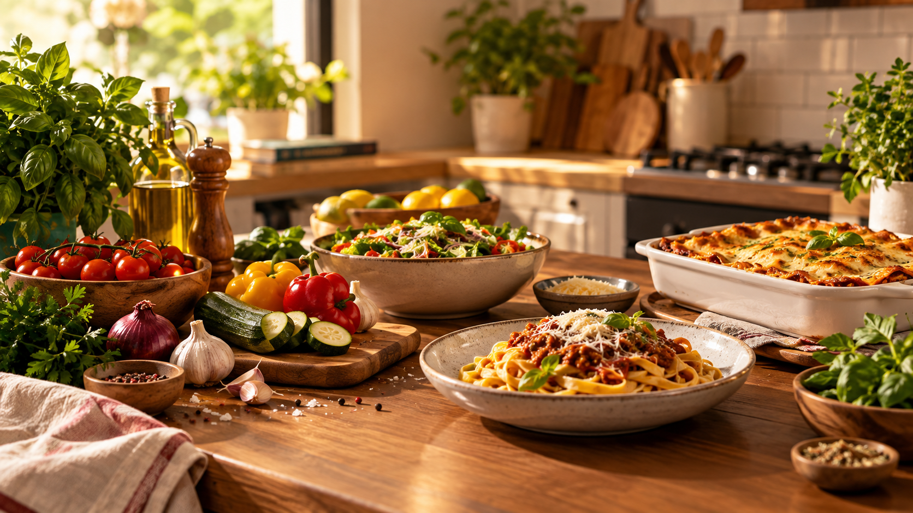
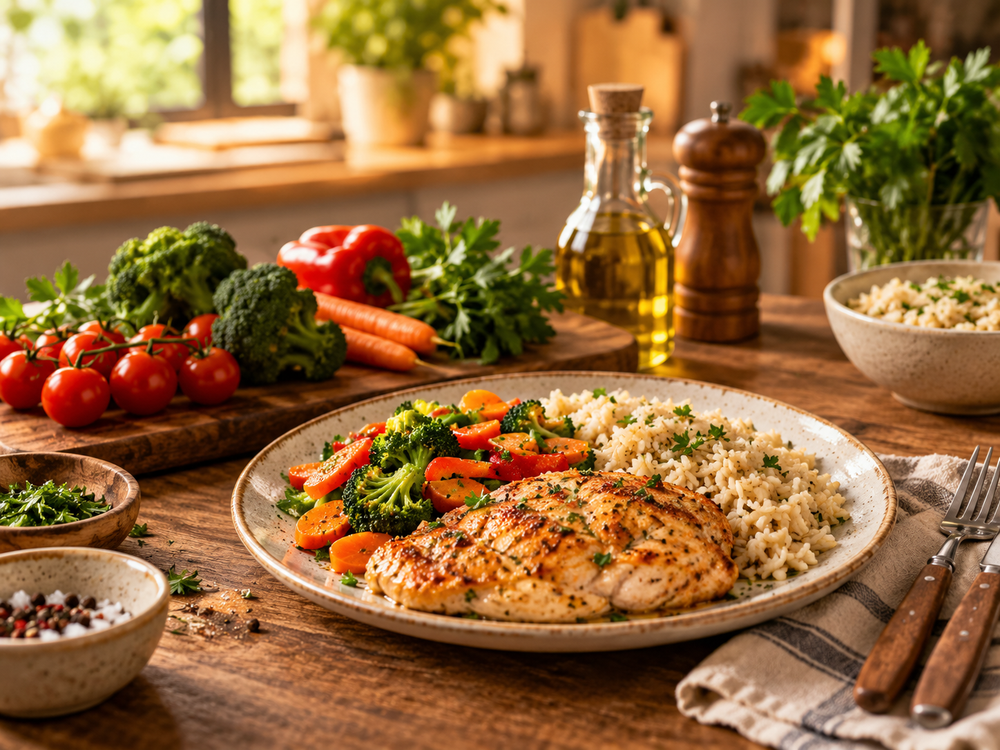
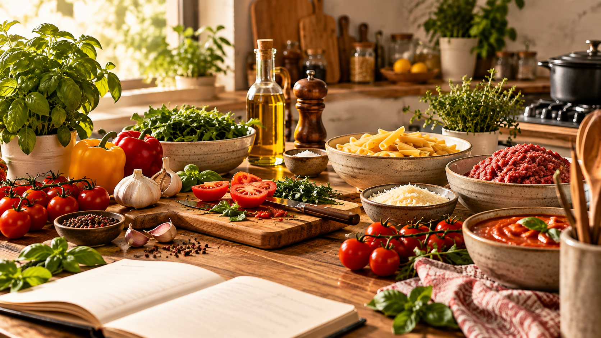

BUSQUE RECEITAS
Encontre receitas de acordo com o que você deseja preparar.

SOBRE O CHEFBOX
O ChefBox é uma plataforma criada para facilitar a busca, organização e descoberta de receitas para todos os momentos.

O ChefBox reúne receitas fáceis, rápidas e saborosas em um só lugar. A plataforma permite encontrar receitas, consultar seus ingredientes e modo de preparo, salvar favoritas e explorar diferentes categorias.
Encontre receitas de acordo com o que você deseja preparar.
Explore receitas de diferentes categorias e descubra novas opções.
Guarde suas receitas favoritas para encontrá-las facilmente depois.
Consulte ingredientes, tempo de preparo, dificuldade e modo de preparo.

Facilitar o acesso a receitas de forma simples, organizada e prática, ajudando você a encontrar novas ideias para cozinhar no dia a dia ou em momentos especiais.
Explore o ChefBox e encontre receitas para todos os momentos.
Explorar receitas